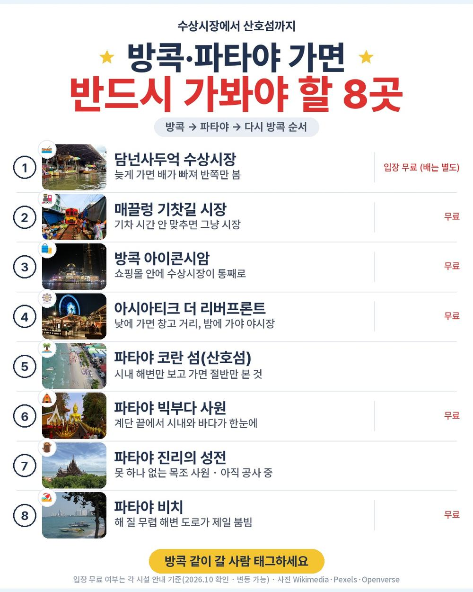
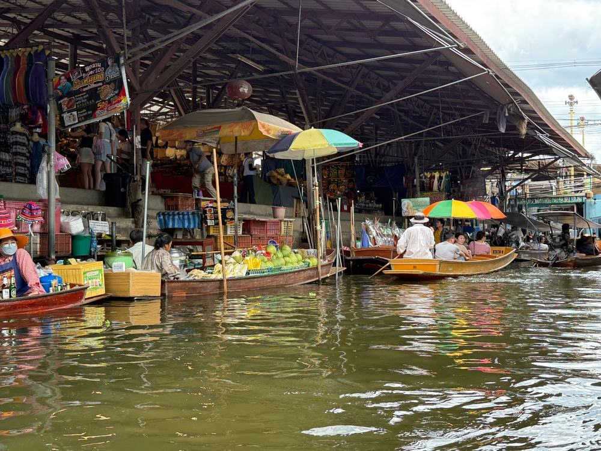
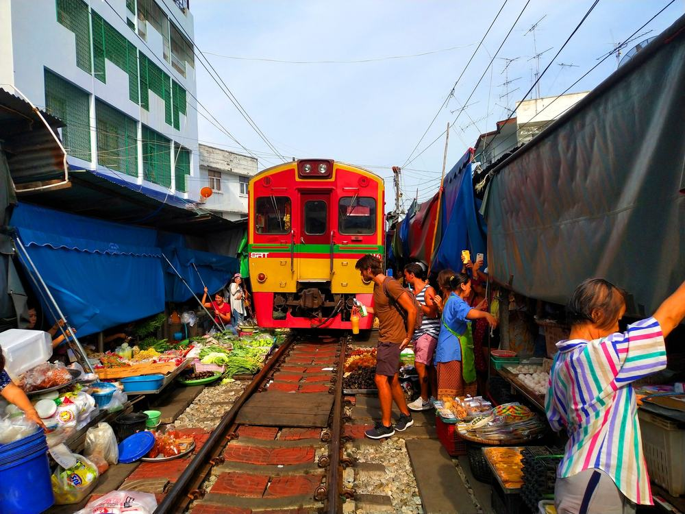
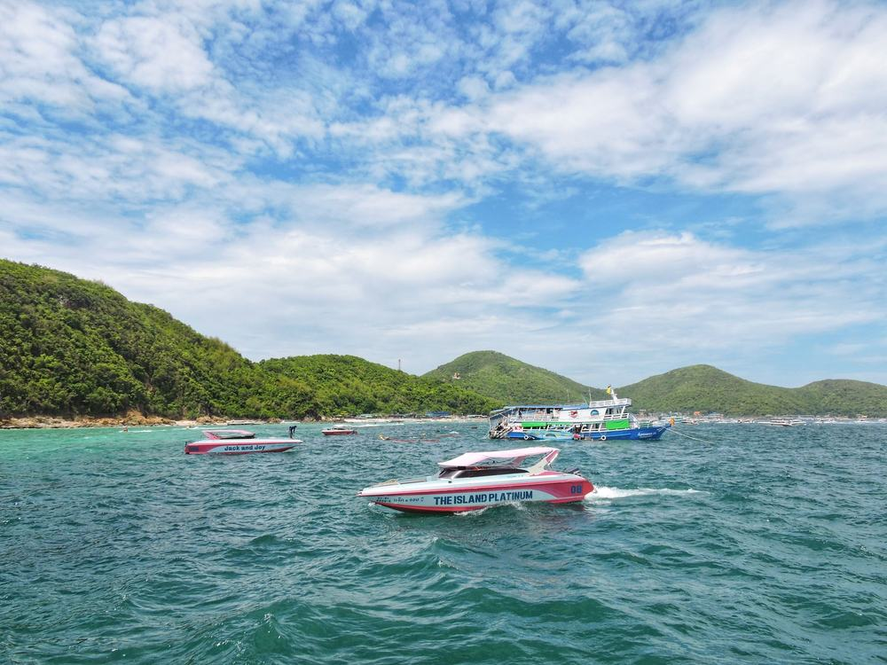
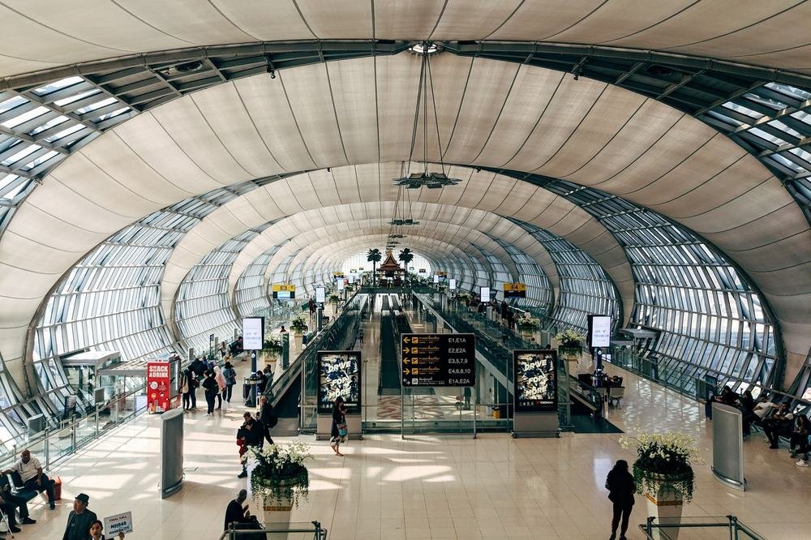
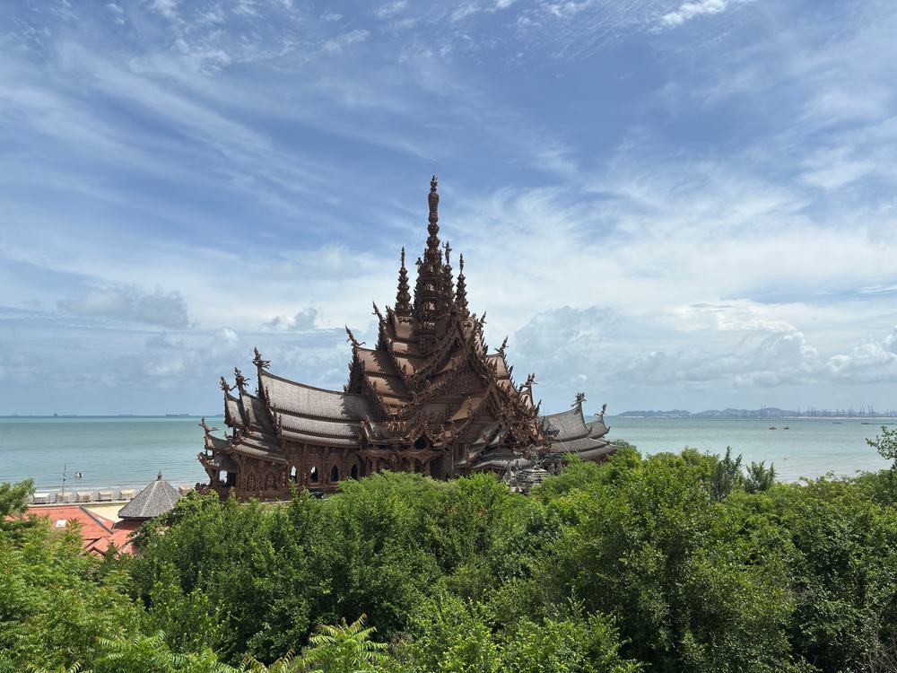
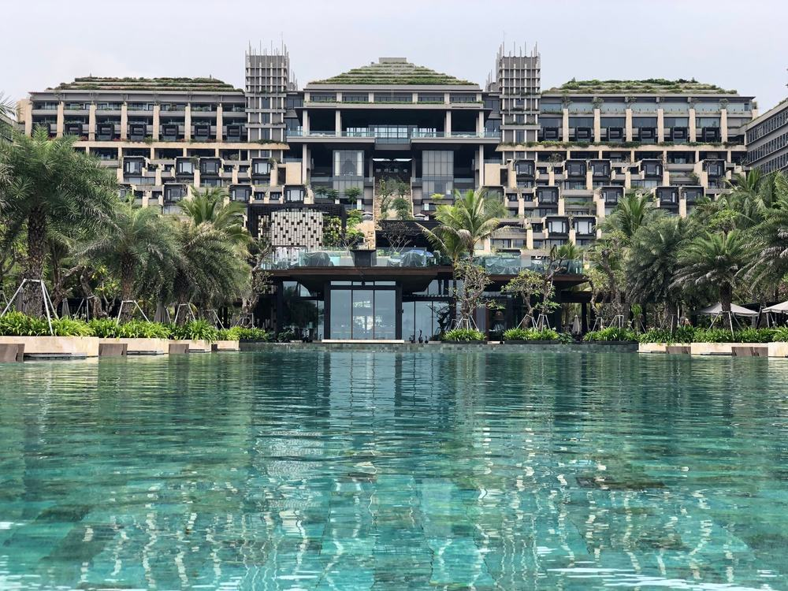
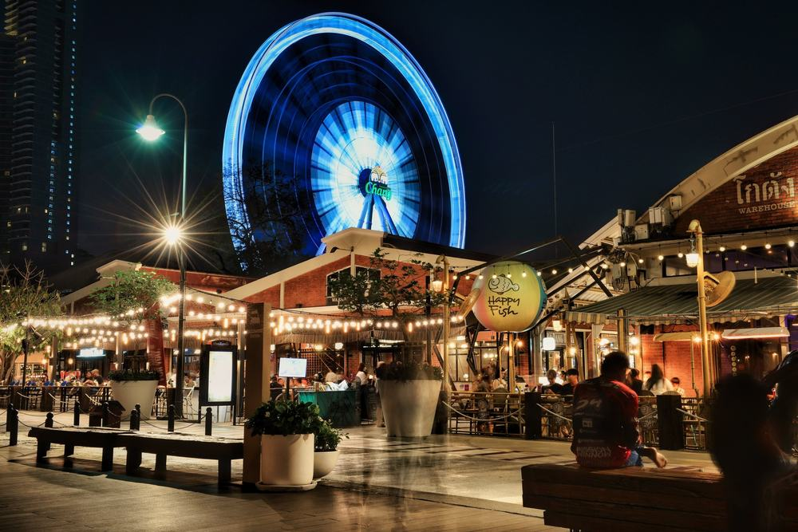

부모님이 태국은 처음이라 방콕이랑 파타야를 한 번에 도는 패키지를 찾고 있었음. 50만원 아래 상품이 꽤 많은데, 싼 만큼 현지에서 뭘 더 내는지가 늘 걸림.
그러다 하나투어 3박 5일짜리가 걸림. 49만 9천원에 인천 직항, 전일정 5성 3박이라고 적혀 있고, 수상시장·위험한 기찻길·산호섬·진리의 성전이 다 들어 있음. 식사는 9회인데 그중 특식이 다섯 번임.
결론 — 추천. 값에 비해 들어 있는 게 많고, 현지에서 더 내는 돈은 가이드 경비 50달러가 거의 전부임. 다만 쇼핑 3회·선택관광 권유가 싫은 분, 귀국 새벽 1시 30분 비행기가 힘든 분, 가이드 경비를 현지에서 내는 게 싫은 분은 아님.
49만 9천원에 저게 진짜 다 되는지, 추가금은 얼마인지 궁금해서 원문을 뜯어봤음.
| 항목 | 내용 |
|---|---|
| 가격 | 1인 499,000원 (2인 1실 기준 · 11월 출발) |
| 여행사 | 하나투어 |
| 항공 | 트리니티항공 직항 · 인천 19:50 → 방콕 00:10 / 귀국 01:30 → 인천 09:00 |
| 숙소 | 전일정 5성 3박 (방콕 1박 · 파타야 2박, 또는 동급) |
| 일정 | 3박 5일 · 전용 차량 · 한국어 가이드 · 식사 9회 |
| 가는 곳 | 담넌사두억 수상시장 · 매끌렁 기찻길 · 아이콘시암 · 산호섬 · 빅부다 · 진리의 성전 · 아시아티크 |
| 순서 | 다루는 것 | 한 줄 결론 |
|---|---|---|
| 1 | 구성 뜯어보기 | 현지 추가금은 가이드 경비 50달러 |
| 2 | 일정 살펴보기 | 둘째 날이 제일 길고, 셋째 날은 바다에서 쉼 |
| 3 | 자유여행 VS 패키지 | 직접 짜면 95만원 | 패키지가 38만원쯤 쌈 |
요약 — 항공·5성 3박·식사 9회·관광지 입장료·보험이 다 들어 있음. 현지에서 더 내는 돈은 가이드·기사 경비 50달러이고, 쇼핑 3회와 선택관광 목록이 있음.

포함 항목을 원문에서 그대로 옮기면 이럼.
- 왕복 항공권 + 유류할증료 + 세금
- 전일정 5성 3박 (방콕 1박 · 파타야 2박 · 2인 1실)
- 식사 9회 — 조식 3번 + 특식 다섯 번 + 아시아티크 자유식(1인 300바트 지급)
- 관광지 입장료
- 전용 차량 · 한국어 가이드 · 여행자보험
특식 이름이 구체적임. 타이푸드 식당 띠여우 매끌렁, 무제한 삼겹살, 태국식 등뼈찜 랭쌥, 미슐랭 맛집으로 소개된 매퐁스리, 현지인 맛집 제또쌀국수. 여기에 매일 간식이 하나씩 나옴 — 코코넛 아이스크림, 땡모반 수박주스, 쌀과자 카우땐.
출발일별 요금 확인하기
https://naver.me/GP2oSjAU

가이드·기사 경비는 불포함임. 1인 50달러를 현지에서 냄. 성인·아동 같음. 대신 식사 9회가 전부 들어 있어서 밥값은 따로 안 나감.
쇼핑은 3회임. 보석, 태국 토산품, 건강식품 쪽이고 한 곳에 약 50분. 사는 건 자유고 환불도 됨.
선택관광은 목록이 있음. 마사지, 쇼, 해양 스포츠 같은 것들이고 20달러부터 120달러까지. 안 하면 호텔로 돌아가거나 근처에서 쉼. 불참자 동선이 원문에 하나하나 적혀 있는 건 좋은 점임.
| 항목 | 금액 | 비고 |
|---|---|---|
| 가이드·기사 경비 | USD 100 (약 140,000원) | 1인 50달러 × 2인 |
| 식사 | 0원 | 9회 포함 · 아시아티크 저녁은 300바트 지급 |
| 매너팁 | 자율 | 객실·마사지 팁 등, 안 내도 불이익 없음 |
| 선택관광 | 하는 만큼 | 안 하면 0원 |
| 기내식 | 사 먹으면 별도 | 저비용 항공 · 기내식 유료 |
| 합계 (2인) | 약 140,000원 | 상품가 99만 8천 + 14만 = 약 114만원 |
한 사람으로 치면 약 57만원임.
1절 자주 나오는 질문
Q. 가이드 경비는 언제 내나요?
A. 원문 불포함 칸에 '가이드/기사 경비 USD 50'이라고 적혀 있음. 현지에서 가이드에게 냄. 달러로 챙겨 가면 편함.
Q. 선택관광을 안 하면 눈치 보이지 않나요?
A. 원문에 선택관광마다 '미참여 시 호텔 귀환 또는 주변 자유시간'이라고 적혀 있음. 안 해도 일정이 끊기지 않게 짜여 있음.
Q. 인솔자가 같이 가나요?
A. 인솔자는 불포함임. 인천공항 수속은 각자 하고, 방콕에서 한국어 가이드를 만나 전 일정을 함께 함.
요약 — 1일차 자정 도착 후 공항 근처 호텔, 2일차 수상시장·기찻길·아이콘시암 후 파타야로, 3일차 산호섬·빅부다·야시장, 4일차 진리의 성전·아시아티크 후 새벽 비행기. 제일 긴 날은 2일차임.

| 일차 | 가는 곳 | 식사 | 숙소 |
|---|---|---|---|
| DAY 1 | 인천 19:50 → 방콕 00:10 → 공항 근처 호텔 | — | 5성 (방콕) |
| DAY 2 | 담넌사두억 수상시장 → 매끌렁 기찻길 → 아이콘시암 → 파타야 이동 | 조 · 중 띠여우 매끌렁 · 석 무제한 삼겹살 | 5성 (파타야) |
| DAY 3 | 산호섬 투어 → 빅부다 사원 → 파타야 야시장 | 조 · 중 랭쌥 · 석 매퐁스리 | 5성 (파타야) |
| DAY 4 | 진리의 성전 → 방콕 이동 → 아시아티크 → 공항 | 조 · 중 제또쌀국수 · 석 자유식(300바트 지급) | 기내 |
| DAY 5 | 방콕 01:30 → 인천 09:00 | — | — |
| 일차 | 버스 이동 | 걷기 | 포함 식사 |
|---|---|---|---|
| DAY 1 | 약 0.3시간 | 적음 | 포함 끼니 없음 |
| DAY 2 | 약 5시간 | 보통 | 조 호텔식 · 중 띠여우 매끌렁 · 석 무제한 삼겹살 |
| DAY 3 | 약 1시간 | 보통 | 조 호텔식 · 중 랭쌥 · 석 매퐁스리 |
| DAY 4 | 약 3.5시간 | 보통 | 조 호텔식 · 중 제또쌀국수 · 석 자유식(300바트 지급) |
| DAY 5 | 거의 없음 | 적음 | 포함 끼니 없음 |
| 합계 | 약 9.8시간 | - | 9끼 (호텔식 3 · 특식 5 · 자유식 1) |
요약 — 버스 이동은 5일 동안 약 9.8시간, 포함 식사는 9끼(호텔식 3 · 특식 5 · 자유식 1)임. 가장 많이 걷고 가장 오래 타는 날은 DAY 2임.

인천에서 저녁 7시 50분에 떠서 현지 0시 10분에 내림. 태국이 한국보다 두 시간 늦어서 비행은 여섯 시간쯤임. 첫날은 공항 근처 호텔에 들어가 자는 게 일정의 전부임.
돌아올 때도 비슷함. 4일차 아시아티크에서 저녁까지 먹고 공항으로 가서 새벽 1시 30분에 떠 인천에 아침 9시에 내림. 기내에서 한 밤을 보내는 구조라 이게 이 상품에서 제일 먼저 갈리는 지점임.

2일차는 방콕 서쪽 담넌사두억 수상시장과 매끌렁 기찻길을 보고, 방콕으로 돌아와 아이콘시암에서 자유시간을 가진 뒤 파타야로 넘어감. 버스를 제일 오래 타는 날임.
3일차는 산호섬임. 배로 들어가 하나투어 전용 비치에서 쉬고, 오후에 빅부다 사원, 저녁 매퐁스리, 밤에 야시장. 4일차 아침이 진리의 성전, 못 하나 없이 나무로만 짓는 사원이고 외벽이 전부 손으로 깎은 조각임.

원문 핵심 포인트에 전일정 5성급 호텔 투숙이 적혀 있음. 방콕 1박은 공항 근처, 파타야 2박은 한 호텔 연박이라 짐은 한 번만 풂. 호텔 이름은 또는 동급으로 적혀 있음.
하나 챙길 것 — 원문 안내에 동남아 호텔은 칫솔·치약을 두지 않는다고 적혀 있음. 세면도구는 가방에 넣어 가야 함.
2절 자주 나오는 질문
Q. 많이 걷나요?
A. 2일차 수상시장·기찻길 시장과 3일차 빅부다 계단, 야시장이 걷는 구간임. 산호섬은 배로 들어가 해변에서 쉬는 날이라 걷기는 적음.
Q. 비자 필요한가요?
A. 원문 비자 칸은 '불필요'임. 대신 태국 디지털 입국카드(TDAC) 를 미리 작성해야 함. 원문에 '미작성 시 입국 불가'라고 적혀 있음.
Q. 11월 방콕 날씨는 어떤가요?
A. 우기가 끝나고 건기가 시작되는 때라 낮 기온 30도 안팎임. 반팔에 얇은 겉옷이면 되고, 사원에 들어갈 땐 어깨와 무릎을 가리는 옷이 좋음.
요약 — 같은 일정을 직접 짜면 1인 95만원쯤 듦. 패키지는 가이드 경비까지 더해 약 57만원임. 패키지가 38만원쯤 쌈.

같은 일정을 혼자 짠다고 치고 항목별로 계산해 봄. 11월 기준, 2인 1실 1인분임. 환율은 1달러 1,400원, 1바트 약 43원으로 잡았음. 항공 말고는 추정치라 근거 열에 적어 둠.
| 항목 | 금액 | 근거 |
|---|---|---|
| 인천–방콕 왕복 항공 | 470,000원 | 같은 주 직항 최저가 (2026-10-01 마이리얼트립 조회 · 패키지 출발일 운임은 175만원대로 튀어 낮은 값을 씀) |
| 5성 3박 | 150,000원 | 5성 2인 1실 1박 10만원 안팎의 1인분 (추정) |
| 담넌사두억·매끌렁 반일 투어 | 60,000원 | 1,500바트 안팎 (추정) |
| 산호섬 왕복 보트 | 30,000원 | 스피드보트 (추정) |
| 진리의 성전 입장료 | 20,000원 | 500바트 안팎 (추정) |
| 식사 9회 | 120,000원 | 패키지 포함분과 같은 끼니 · 특식 포함 (추정) |
| 공항 ↔ 방콕 ↔ 파타야 이동 | 80,000원 | 차량 이동 (추정) |
| 여행자보험 | 15,000원 | 5일 기준 |
| 가이드 | — | 자유여행은 없음 |
| 합계 | 약 945,000원 |
직접 짜실 분은 이 날짜 항공권부터 보세요 — https://myrealt.rip/tWWLf3 (마이리얼트립 제휴 링크)
패키지는 499,000원 + 가이드 경비 약 70,000원 = 약 569,000원임.
숫자만 봐도 패키지가 38만원쯤 쌈. 항공권 값에 가까운 돈으로 호텔 세 밤과 식사 아홉 번, 입장료까지 들어 있는 셈임. 항공을 제일 싼 날로 잡아도 이 차이임.
그리고 표에 못 넣은 게 있음. 담넌사두억과 매끌렁은 방콕에서 서쪽으로 한참, 파타야는 반대로 동남쪽이라 자유여행이면 날마다 차를 따로 잡아야 함. 전용 차량이 그걸 다 이어 줌.
여기에 가이드가 붙음. 자유여행 계산표에 가이드 행이 비어 있는 게 그 뜻임 — 0원이 아니라 살 수 없는 것임.
| 자유여행이 맞음 | 패키지가 맞음 |
|---|---|
| 방콕 시내만 천천히 볼 것임 | 수상시장·산호섬·파타야까지 다 볼 것임 |
| 그랩 부르는 게 익숙함 | 이동은 맡기고 앉아만 있고 싶음 |
| 쇼핑센터에 한 번도 안 들르고 싶음 | 5성 호텔을 싸게 쓰고 싶음 |
| 밤 비행기가 싫음 | 식사 고민 없이 특식을 먹고 싶음 |
3절 자주 나오는 질문
Q. 자유여행이 더 싸지 않나요?
A. 계산해 보면 자유여행이 약 95만원, 패키지가 약 57만원임. 항공권이 제일 크고, 파타야 이동과 섬 보트를 따로 사면 금방 벌어짐.
Q. 두 명만 예약해도 떠나나요?
A. 원문 최소 인원은 2명임. 다만 다른 상품 손님과 함께 행사가 진행될 수 있다고 적혀 있음.
Q. 아이와 같이 가도 되나요?
A. 원문 요금은 만 12세 미만 소아도 성인과 같은 499,000원이고, 24개월 미만 유아는 150,000원임.
정리하면 이럼.
추천함. 49만 9천원에 인천 직항, 전일정 5성 3박, 수상시장·위험한 기찻길·산호섬·진리의 성전·아시아티크, 그리고 특식 다섯 번과 매일 간식이 들어 있음. 현지에서 더 나가는 돈은 가이드 경비 50달러가 거의 전부임.
이런 분은 고르면 안 됨. 쇼핑 3회·선택관광 권유 자체가 싫은 분, 귀국 새벽 1시 30분 비행기가 힘든 분, 가이드 경비를 현지에서 내는 게 싫은 분.
걸리는 점이 있긴 한데 상품 흠이라기보다 맞는 사람과 안 맞는 사람을 가르는 조건에 가까움.
오늘 기준 출발일별 요금 보기
https://naver.me/GP2oSjAU
편한여행사 다낭 패키지 여행 71만원, 5성 오션뷰에 마사지 2시간 두 번까지 넣은 노팁 노옵션
https://blog.naver.com/robotnady10/224426623117
롯데관광 푸꾸옥 패키지 여행 64만원, 케이블카에 빈펄 사파리까지 넣은 노옵션
https://blog.naver.com/robotnady10/224425527320
이 글에는 네이버·마이리얼트립 제휴 링크가 포함되어 있으며, 링크를 통해 예약하시면 일정 수수료를 받습니다. 가격은 동일합니다. 가격과 구성은 2026년 10월 1일 확인 기준이며 출발일에 따라 달라질 수 있습니다.
▶ 방콕 패키지 오늘 값 나란히 비교